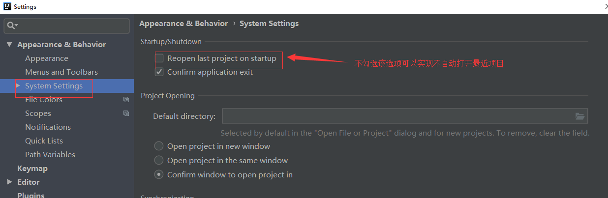
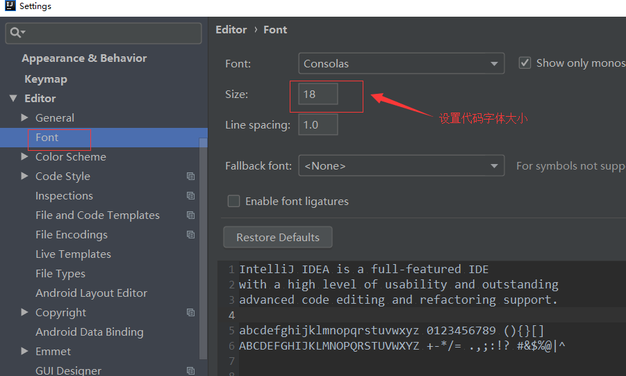
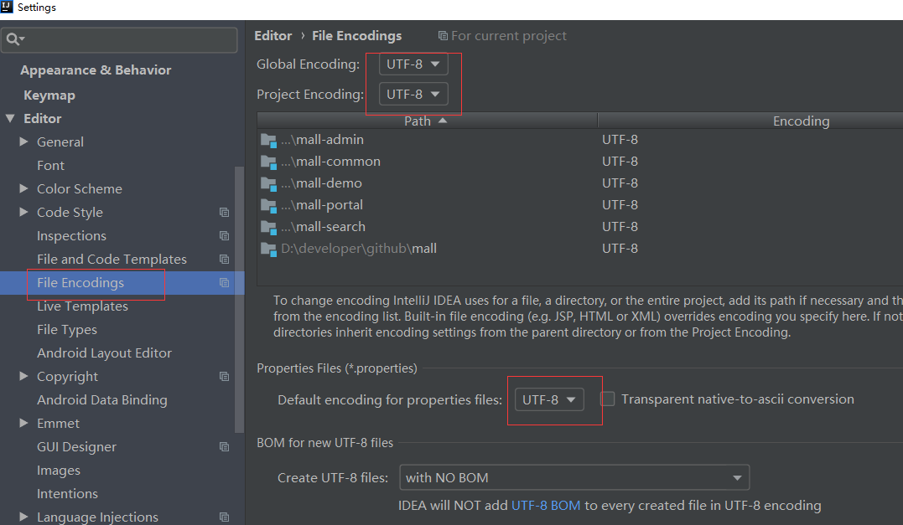
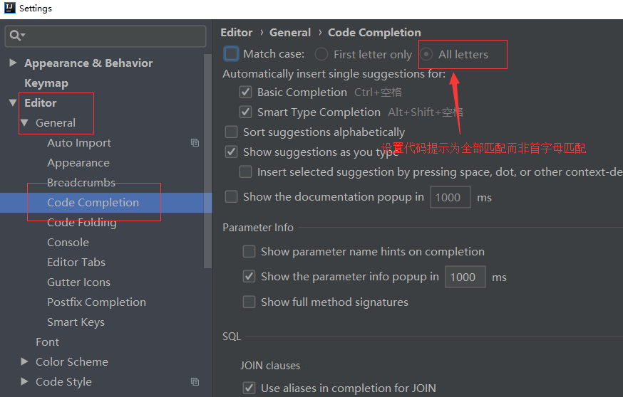
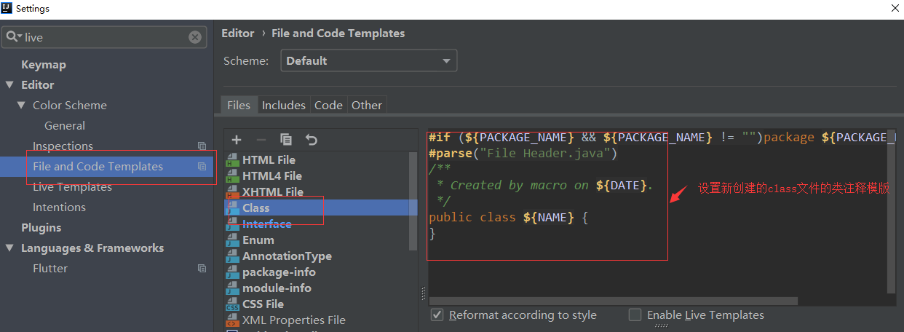
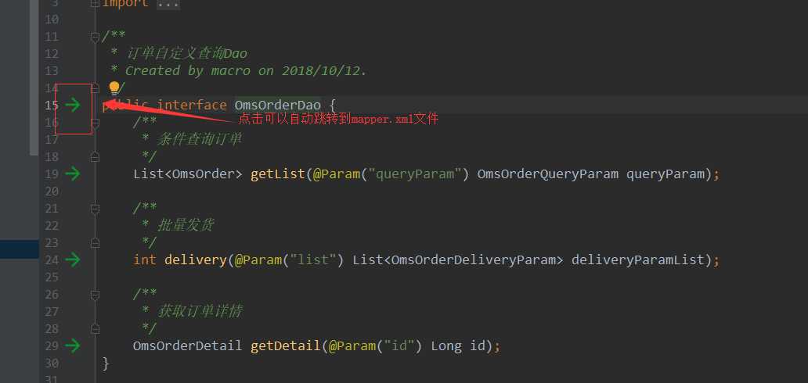
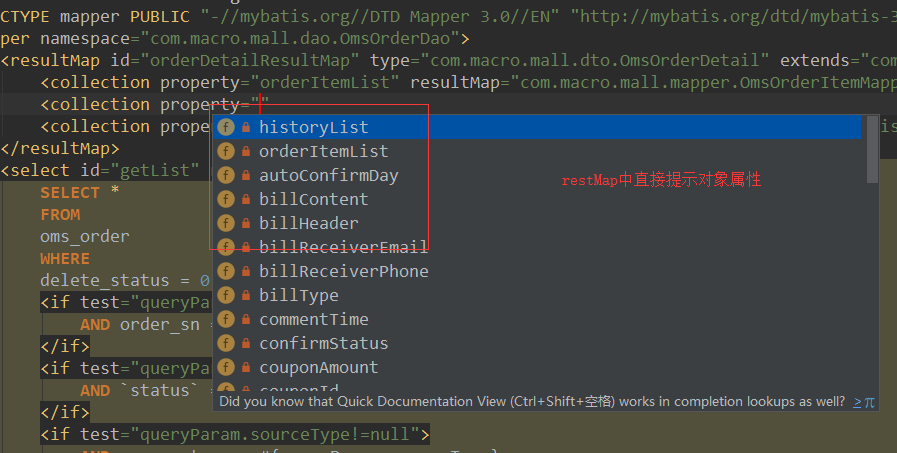
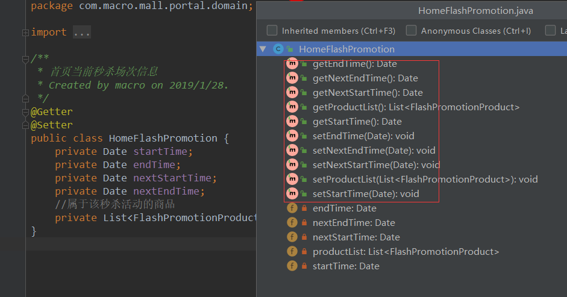

学习不走弯路，关注公众号 回复「学习路线」，获取mall项目专属学习路线！
IDEA常用设置及推荐插件
本文主要记录IDEA的一些常用设置，IDEA与Eclipse的常用快捷键对比及推荐一些好用的插件。
基本设置
设置界面风格及修改外部UI尺寸大小

打开IDEA时设置不重新打开最近的项目
IDEA默认会打开最近的项目，有时候我们需要自己选择要打开的项目，不勾选该选项可以实现。

设置IDEA的快捷键

设置代码字体大小

设置项目文件编码格式

设置代码提示的匹配模式

设置新建类文件的类注释模版

IDEA和Eclipse常用快捷键对比
友情提示：IDEA可以设置为Eclipse风格的快捷键，在File->Settings->Keymap处，如需更改部分快捷键可按如下表格中的英文描述进行搜索，并改为相应快捷键。
| Eclipse | IDEA | 英文描述 | 中文描述 |
|---|---|---|---|
| ctrl+shift+r | ctrl+shift+n | Navigate->File | 找工作空间的文件 |
| ctrl+shift+t | ctrl+n | Navigate->Class | 找类定义 |
| ctrl+shift+g | alt+f7 | Edit->Find->Find Usages | 查找方法在哪里调用.变量在哪里被使用 |
| ctrl+t | ctrl+t | Other->Hierarchy Class | 看类继承结构 |
| ctrl+o | ctrl+f12 | Navigate->File Structure | 搜索一个类里面的方法 |
| shift+alt+z | ctrl+alt+t | Code->Surround With | 生成常见的代码块 |
| shift+alt+l | ctrl+alt+v | Refactor->Extract->Variable | 抽取变量 |
| shift+alt+m | ctrl+alt+m | Refactor->Extract->Method | 抽取方法 |
| alt+左箭头 | ctrl+alt+左箭头 | Navigate->Back | 回退上一个操作位置 |
| alt+右箭头 | ctrl+alt+右键头 | Navigate->Forward | 前进上一个操作位置 |
| ctrl+home | ctrl+home | Move Caret to Text Start | 回到类最前面 |
| ctrl+end | ctrl+end | Move Caret to Text End | 回到类最后面 |
| ctrl+e | ctrl+e | View->Recent Files | 最近打开的文件 |
| alt+/ | ctrl+space | Code->Completion->Basic | 提示变量生成 |
| ctrl+1 | alt+enter | Other->Show Intention Actions | 提示可能的操作 |
| ctrl+h | ctrl+shift+f | Find in Path | 全局搜索 |
| alt+上/下箭头 | alt+shift+上/下箭头 | Code->Move Line Up/Down | 移动一行代码 |
| ctrl+/ | ctrl+/ | Other->Fix doc comment | 方法注释 |
| ctrl+alt+s | alt+insert | Generate | 生成getter,setter,tostring等 |
推荐插件
由于IDEA本身就自带很多插件，可以完成大部分需求，这里就推荐两个本人常用的插件。
Free MyBatis plugin
非常好用的MyBatis插件，对MyBatis的xml具有强大的提示功能，同时可以关联mapper接口和mapper.xml中的sql实现。
可以从mapper接口和mapper.xml文件中相互跳转

mapper.xml中的各种提示


Lombok plugin
Lombok为Java语言添加了非常有趣的附加功能，你可以不用再为实体类手写getter,setter等方法，通过一个注解即可拥有。
一个没有getter,setter方法的类通过添加@Getter和@Setter注解拥有了getter,setter方法。

公众号